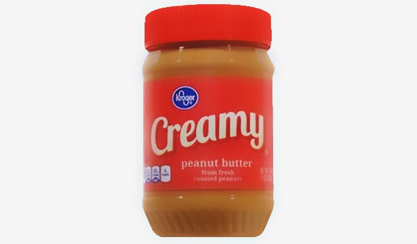

Eeat less sugar,
you're sweet enough already
cs_team_beta_hw2 - Automn 2018

cs_team_beta_hw2 - Automn 2018

To perform this Data Exploration, we decided to focus on the overall information about "Contributors", "Brands", "Countries" and "Categories".
Top 10 Creators
Distribution of Products by Creator, generated with Seaborn from jupyter Notebook.
| Creators | counts | percentage |
| kiliweb | 299'820 | 43.987547 |
| usda-ndb-import | 169'861 | 24.920848 |
| openfoodfacts-contributors | 82'719 | 12.135968 |
| date-limite-app | 17'453 | 2.560585 |
| openfood-ch-import | 11'459 | 1.681186 |
| tacite | 8'438 | 1.237966 |
| sebleouf | 8'359 | 1.226376 |
| tacinte | 5'282 | 0.774939 |
| stephane | 2'774 | 0.406982 |
| javichu | 2'766 | 0.405809 |
681'599 records have Creator, 3 records do not have any Creator (0.0004%)
More than 80% of the Products have been created by the first 3 Contributors.
We could almost consider individual contributors as marginal.
So far we can see that Kiliweb is the most active contributor and is continously adding products. usda-ndb-import, which is the 'United States Department of Agriculture' seems to not contribute anymore to the Open Food Facts Database and has been only imported once. The open community of openfoodfacts-contributors seems to be growing day after day.

Evolution of added items per Contributor
The diversity of contributors may lead to mismatched data. Most of the contributors could be considered as unknowns, and data accuracy could therefore not be checked/validated. Furthermore, most of the contributors simply add products they find in their home country, leading to the risk of duplicate/similar products in the database. We can already assume, based of the main contributors, that the diversity of products by country is not representative and comparison against country is most probably not relevant enough.
Top 10 Brands
Distribution of Products by Brand, generated with Seaborn from jupyter Notebook.
| Brands | counts | percentage |
| Carrefour | 5'384 | 0.789904% |
| Auchan | 5'313 | 0.779487% |
| U | 4'401 | 0.645685% |
| Casino | 3'130 | 0.459212% |
| Leader Price | 2'825 | 0.414465% |
| Cora | 2'230 | 0.327170% |
| Meijer | 1'997 | 0.292986% |
| Kroger | 1'673 | 0.245451% |
| Picard | 1'517 | 0.222564% |
| Ahold | 1'370 | 0.200997% |
There is a total of 681'602 records, and 2'211'773 of them are empty (32.44958%)
32% of the products are not assigned to any Brands. Furthermore the 6 biggest brands of Open Food Facts were all French malls. It sounds strange that majority of all the products are reported from France. Maybe the popularity of French cheese, like Product Code '3245390058782' Petit Munster Géromé, is the reason behind the difference? Could this be an avenue for analysis!?
List of French Cheese, by http://goatcheesesoffrance.com/the-cheeses/#chevre-regions
It's true that there is a lot of cheese in France and that some of them are really famous , as illustred above or in Wikipedia !
There is unlikely no correlation with cheese and the number of French Products. The number of French Products could be most likely explained by the fact that the biggest contributor is a French Agency, called Kiliweb.
This may explain why there are so many products attributed to French Brands and France.
Top 10 Largest Countries
Distribution of Products by Country, generated by Seaborn from jupyter Notebook.
| Countries | counts | percentage |
| France | 409'951 | 60.145217% |
| United States | 173'494 | 25.453857% |
| Switzerland | 13'543 | 1.986937% |
| Germany | 11'629 | 1.706128% |
| Spain | 6'104 | 0.895537% |
| France, Germany | 5'884 | 0.863260% |
| United Kingdom | 5'643 | 0.827903% |
| Belgium | 5'309 | 0.778900% |
| France, Switzerland | 4'345 | 0.637469% |
| Belgium, France | 3'505 | 0.514230% |
681'058 records have Countries, 544 records do not have any country (0.07%)
Explicitly looking at country instead of brand we see the same behaviour as in the previous analysis. Most of the products are attributed to France which falls in line with the main contributor being kiliweb, a France Web Agency, and the most popular brands analysed above.
Even if most of the products have been assigned to country, as only 544 products are not linked to any country, we discover that there is 1361 countries.
So far it seems that countries contain a list of countries and not unique countries.
Furthermore most of the products are linked to one or two countries ONLY, which is very suspicious.
|  |
We could assume per example that this Peanut Butter assigned to France could be founded in another country like USA as it is made by Kroger.
Most probably this product, which is being sold in France, had been repertoried as French's product by a French Contributor. But we could be sure that this peanut butter is sold in USA too, maybe in a different product's name. |
Distribution of Products by Country
Distribution of Products by Country, generated with Folium from jupyter Notebook.
Even if the Country information isn't well structured, we proceeded with some cleaning activities.
For this purpose, we tried to create a Country Map with folium, and performed following actions:
It's clear, by looking on the map, that data for only few countries have been submitted. Based of this, we can say that most of the products are assigned to
So far we can conclude that this field 'country' has to be used with precaution.
Top 10 Largest Categories
Distribution of Products by Categories, generated with Seaborn from jupyter Notebook.
| Categories | counts | percentage |
| Plant-based foods and beverages | 37'312 | 5.474162% |
| Beverages | 25'368 | 3.721820% |
| Sugary snacks | 23'588 | 3.460671% |
| Dairies | 15'580 | 2.285791% |
| Meats | 9'589 | 1.406833% |
| Groceries | 9'390 | 1.377637% |
| Meats | 7'669 | 1.125143% |
| Spreads | 4'355 | 0.638936% |
| Frozen foods | 3'093 | 0.453784% |
| Fruit juices | 3'065 | 0.449676% |
173'722 records have Categories, 507'880 records do not have any Category (74%)
It seems that 74% of the Products(507'880) does not have any 'category'. Furthermore the first and second categories both contain 'Beverages'.
So far we can conclude that this field 'category' has to be used with precaution.
 Move back to Home
Move back to Home